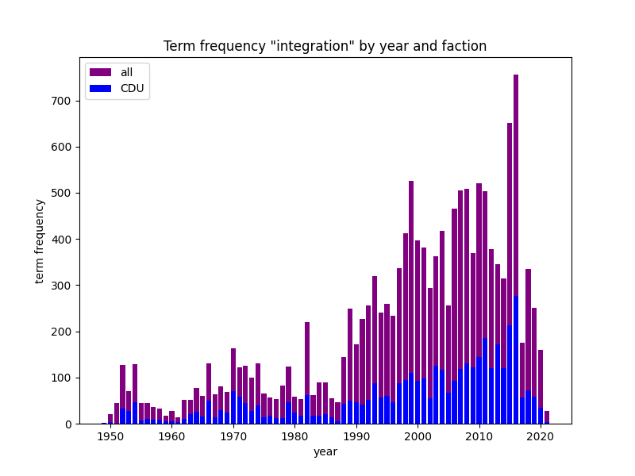
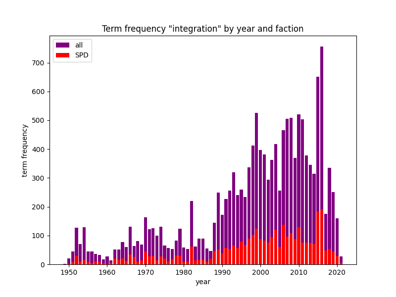

Overview
Digital humanities researchers can effectively navigate and analyze large data sets, uncover patterns, and reveal hidden relationships using visualization techniques such as network diagrams, timelines, and data-driven visualizations. These visual representations serve as powerful tools for hypothesis generation, exploration, and communication of research results.Visual heuristics in the digital humanities not only help explore data, but also enable researchers to communicate their findings to a broader audience in a more engaging and accessible way. The creation of the visualization based on the project data is explained on the following pages.



